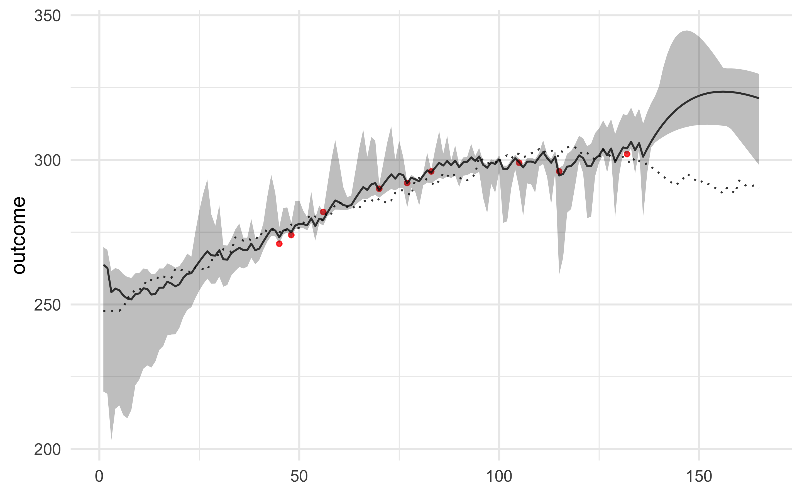

Chapter 17 Appendix A: dorem package

The goal of dorem (Jovanovic and Hemingway 2020) is to provide easy-to-use dose-response models utilized in sport science. This package is currently in active development phases.
17.1 dorem Installation
You can install the development version from GitHub with:
17.2 dorem Example
To provide very simplistic example of dorem, I will use example data provided in supplementary material of Clarke & Skiba, 2013 paper (Clarke and Skiba 2013), freely available on the publisher website. Data set contains cycling training load (i.e. dose) measured using the BikeScore metric (in AU) over 165 days, with occasional training response measured using 5-min Power Test (in Watts). Banister model (explained in aforementioned paper) is applied to understand relationship between training dose (i.e., BikeScore metric) and training response (i.e., 5-min Power Test):
require(dorem)
require(tidyverse)
require(cowplot)
data("bike_score")
banister_model <- dorem(Test_5min_Power ~ BikeScore, bike_score,
method = "banister")
# Print results
banister_model
#> Dose-Response Model using banister method
#> Training data consists of 1 predictor and 165 observations
#> Coefficients are estimated using L-BFGS-B method with 1000 max iterations and -Inf VTR
#>
#> The following start and bound values were used:
#>
#> start lower upper
#> intercept 271 0 302
#> BikeScore.PTE_gain 1 0 10000
#> BikeScore.PTE_tau 21 0 300
#> BikeScore.NTE_gain 3 0 10000
#> BikeScore.NTE_tau 7 0 300
#>
#> Estimated model coefficients are the following:
#>
#> intercept BikeScore.PTE_gain
#> 266.0204779 0.3020749
#> BikeScore.PTE_tau BikeScore.NTE_gain
#> 33.6433797 0.3514750
#> BikeScore.NTE_tau
#> 24.6056388
#>
#> Objective function equal to: 2.1939
#>
#> Cross-Validation of the model was not performed. Shuffling of the predictors was not performed.
#>
#> Overall model performance using selected estimators is the following:
#>
#> training
#> N 9.00000000
#> meanDiff 0.01374013
#> SDdiff 1.57096328
#> RMSE 1.48118212
#> MAE 1.16731419
#> minErr -2.71352646
#> maxErr 2.22332820
#> MAPE 0.40904959
#> R_squared 0.97975692
# get coefs
coef(banister_model)
#> intercept BikeScore.PTE_gain
#> 266.0204779 0.3020749
#> BikeScore.PTE_tau BikeScore.NTE_gain
#> 33.6433797 0.3514750
#> BikeScore.NTE_tau
#> 24.6056388
# Get model predictions
bike_score$pred <- predict(banister_model, bike_score)$.pred
# Plot
dose <- ggplot(bike_score, aes(x = Day, y = BikeScore)) +
theme_cowplot(10) + geom_bar(stat = "identity") + xlab(NULL)
response <- ggplot(bike_score, aes(x = Day, y = pred)) +
theme_cowplot(10) + geom_line() + geom_point(aes(y = Test_5min_Power),
color = "red") + ylab("Test 5min Power")
cowplot::plot_grid(dose, response, ncol = 1)
dorem also allows more control and setup using the control parameter. In the next example, cross-validation of 3 repeats and 5 folds will be performed, with additional feature of shuffling the predictors and evaluating how the model predicts on random predictors (i.e., dose):
banister_model <- dorem(
Test_5min_Power ~ BikeScore,
bike_score,
method = "banister",
# control setup
control = dorem_control(
shuffle = TRUE,
optim_method = "L-BFGS-B",
optim_maxit = 1000,
cv_folds = 3,
cv_repeats = 5
)
)
banister_model
#> Dose-Response Model using banister method
#> Training data consists of 1 predictor and 165 observations
#> Coefficients are estimated using L-BFGS-B method with 1000 max iterations and -Inf VTR
#>
#> The following start and bound values were used:
#>
#> start lower upper
#> intercept 271 0 302
#> BikeScore.PTE_gain 1 0 10000
#> BikeScore.PTE_tau 21 0 300
#> BikeScore.NTE_gain 3 0 10000
#> BikeScore.NTE_tau 7 0 300
#>
#> Estimated model coefficients are the following:
#>
#> intercept BikeScore.PTE_gain
#> 266.0204779 0.3020749
#> BikeScore.PTE_tau BikeScore.NTE_gain
#> 33.6433797 0.3514750
#> BikeScore.NTE_tau
#> 24.6056388
#>
#> Objective function equal to: 2.1939
#>
#> Cross-Validation of the model was performed using 5 repeats of 3 folds. Shuffling of the predictors was performed.
#>
#> Overall model performance using selected estimators is the following:
#>
#> training CV shuffle
#> N 9.00000000 45.0000000 9.0000000
#> meanDiff 0.01374013 -1.4468364 -0.0149063
#> SDdiff 1.57096328 6.5352444 3.8231697
#> RMSE 1.48118212 6.6222094 3.6045497
#> MAE 1.16731419 3.8249026 3.5302780
#> minErr -2.71352646 -35.6767605 -3.9240093
#> maxErr 2.22332820 13.4489856 4.9477488
#> MAPE 0.40904959 1.3119052 1.2250645
#> R_squared 0.97975692 0.6838326 0.8800912To plot model predictions, including the CV as gray area and shuffle as dotted line, use:

To plot model coefficients across CV folds:

To plot model performance across CV folds (i.e., training and testing folds):

References
Clarke, David C., and Philip F. Skiba. 2013. “Rationale and Resources for Teaching the Mathematical Modeling of Athletic Training and Performance.” Advances in Physiology Education 37 (2): 134–52. https://doi.org/10.1152/advan.00078.2011.
Jovanovic, Mladen, and Benedict Stephens Hemingway. 2020. “dorem: Dose Response Modeling.” https://doi.org/10.5281/zenodo.3757085.